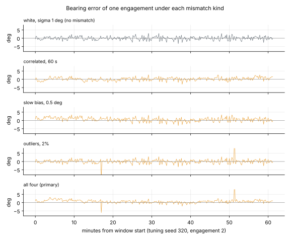
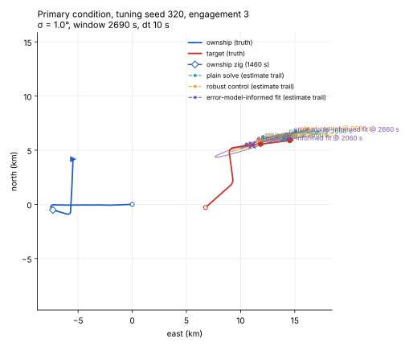
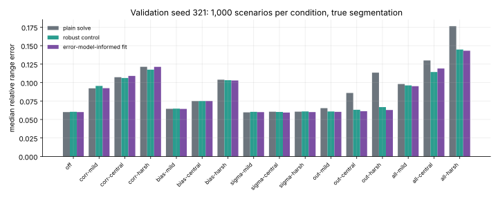
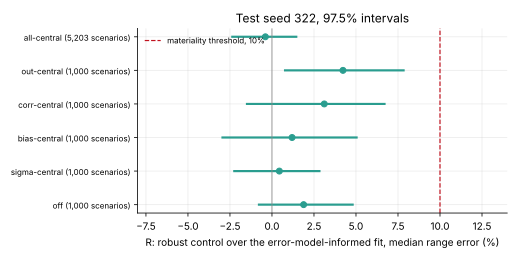
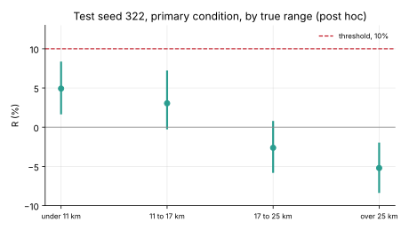

Gate H: is there anything for learning to win?
Headroom under bearing-error mismatch, with nothing trained
10 November 2026 · spec 010, Gate H · gitma2
Why this gate
- Every learned component so far reduced to a classical rule under its control.
- Suspected cause: the simulated bearing errors are exactly what the estimator assumes.
- So measure first: make the errors unlike the model, and ask what knowing the true error model is worth.
- The owner fixed the threshold beforehand: material if the gap is wholly above 10%.
Four kinds of mismatch

One engagement of tuning seed 320 under each kind at central severity. The gate is decided on all four together.
Three estimators, one solve
- Plain solve: assumes white noise.
- Robust control: Huber weights, σ and correlation estimated from residuals. Classical; nothing learned.
- Error-model-informed fit: told the true error covariance.
- All three are given the true manoeuvre times.

Engagement 3 of a demo split (tuning seed 320, primary condition). Marks at zig + 10 and + 20 min.
Validation: every condition

Seed 321, 1,000 engagements each. Outliers are the only kind the plain solve suffers from badly, and the control removes it. Both soundness checks passed.
The verdict: not material
R = −0.4% [−2.4, +1.4]

Test seed 322. Primary condition: 5,203 engagements, 20,473 rows. Median range error 1,880 m (control) against 1,885 m (informed fit); plain solve 2,110 m.
The panel: the pooled zero hides a split

- Short range: knowing the error model is worth about 5%.
- Long range: the informed fit is worse than the robust control.
- Post hoc, not gated. No band reaches 10%.
What the panel narrowed
- The reference is not a ceiling: both fits sit about 25% above the Cramér–Rao bound, and why is not established.
- The severity grid came close to fixing the outcome: only outliers could reach 10%, and Huber removes them.
- The simulated errors are the control's own model family: stationary, independent of geometry.
- True manoeuvre times hide the likeliest operational cost.
Five reviewers, all approve-with-findings. Three recomputed R; one regenerated the test data and matched every digest.
On our own segmenter's output
The registered comparison on C″'s segmentation was run after the verdict, at the panel's request.
Result: see the slides post and experiments/20261110-gh-c2/.
Not achieved
- Nothing was shown about other error families, target-motion mismatch or real data.
- The solve's distance from the bound is unexplained; the author's first explanation was wrong.
- The IMM and EKF references are not competitive on these rows.
- The segmenter comparison was delivered late.
Next
- Learning the bearing-error model for this solve is not pursued.
- The robust control stays: a classical 12% gain under these errors.
- Recommended first: the same harness on the segmenter's output, with a zig-coupled bias and bursty outliers. Cheap; trains nothing.
- Then the scaled end-to-end regressor (needs the owner's Modal account and secrets).
Write-up: /blog/2026/11/10/gate-h · Figures: scripts/research/gh_charts.py and tma2-plot, sidecars next to each SVG